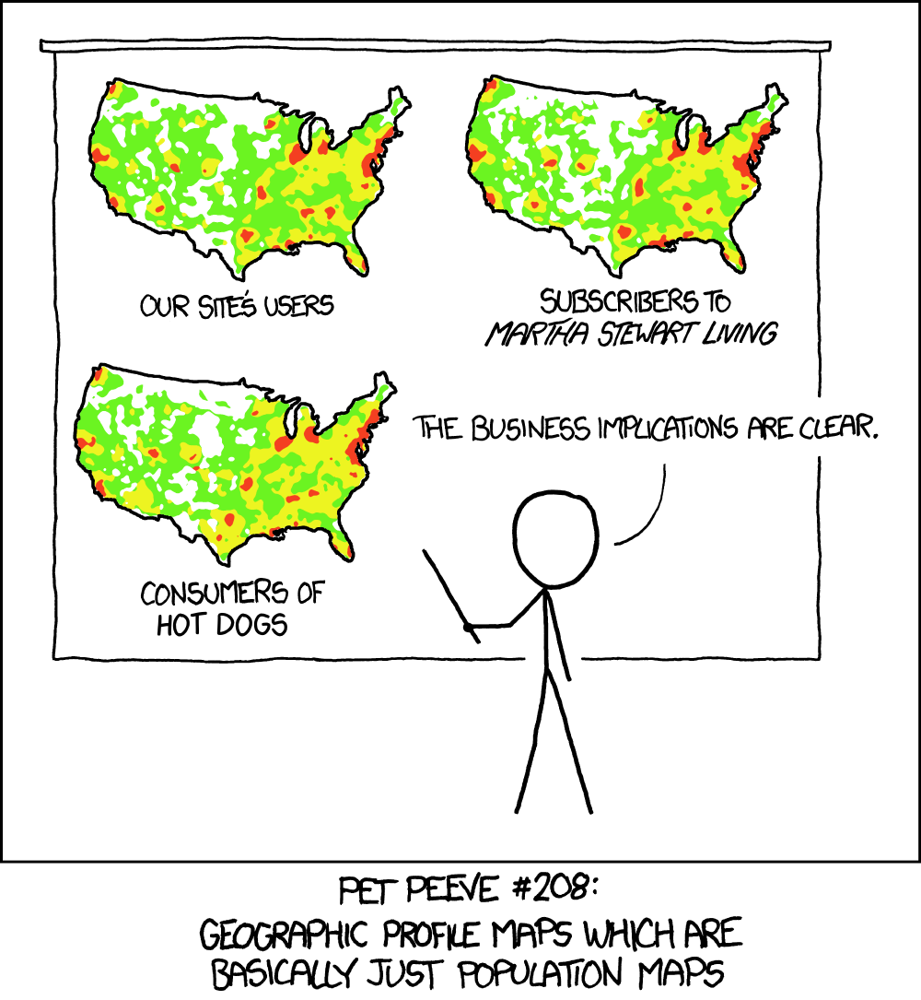
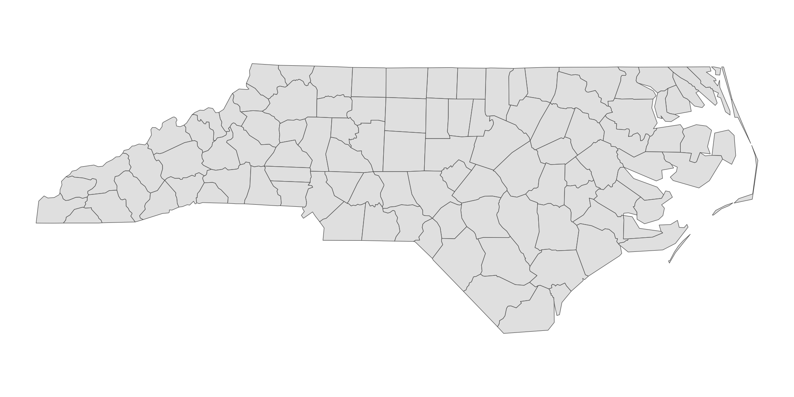
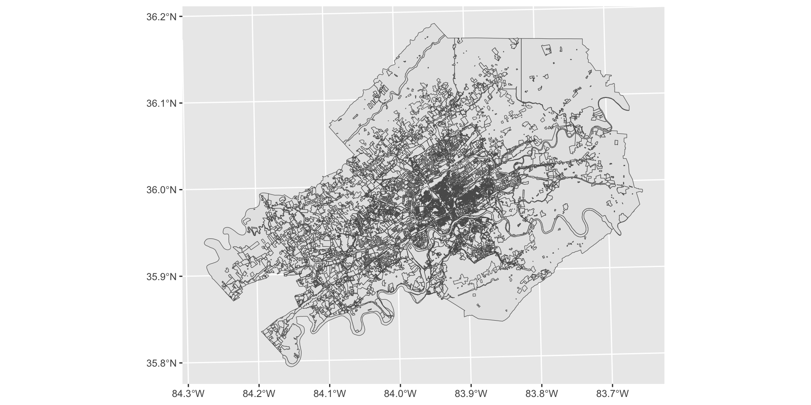
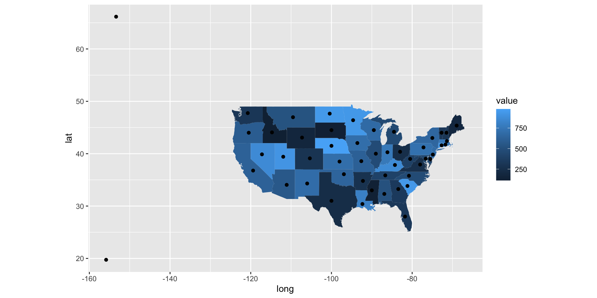
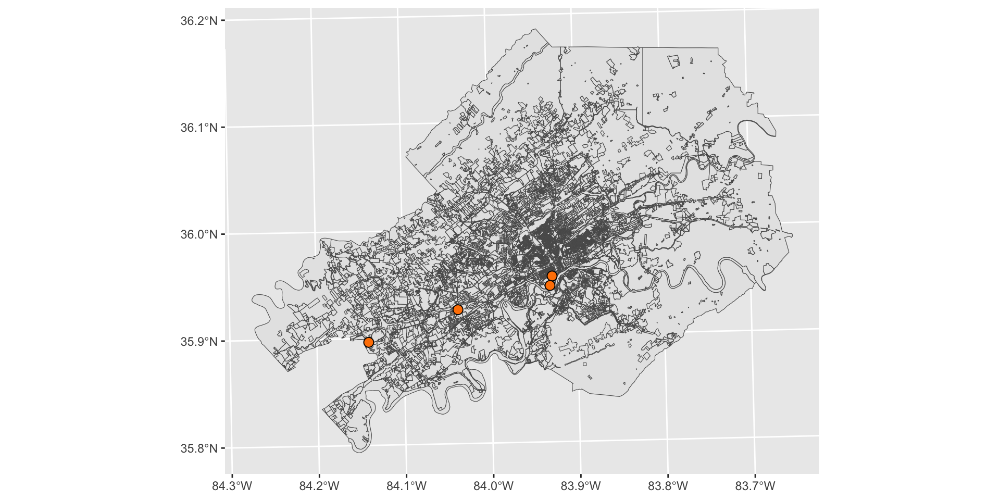

Week 13 - STEM 691
Static maps with {ggplot2}
Today’s agenda
- Final project discussion/updates
- Polygon maps (
geom_polygon()) - Vector spatial data and simple features (
geom_sf()) - Finding geometries: tigris and
st_read() - Creating choropleth maps
- Layering geoms
Final project discussion/updates
Quick discussion
In breakout rooms, please discuss (around one sentence each):
- A description of the data set you plan to use
- Where you are in terms of progress on code to read and start to explore the data
- Which visualizations you plan to create
- What questions you have or what challenges you anticipate
Then please discuss 1-2 punchlines to share with the class
Mapping with ggplot2
Making maps
Map making — the art of cartography — is an ancient skill involving communication, attention to detail, and an element of creativity.

Visualizing data with maps
In addition to being fun and creative, cartography also has important practical applications. A carefully crafted map can be the best way of visualizing data.

Visualizing data with maps
Discussion
- Do you have a favorite example of a map that displays data?
- Have you made a map before that you’d like to share?
Polygon maps
The maps package
The maps package contains many outlines of continents, countries, states, and counties. It’s not very accurate or up-to-date, but is built into R.
To install maps, run the following:
Long/lat data with the maps package
The maps package can access geographic longitude/latitude data with map_data().
library(ggplot2)
library(dplyr)
nc_counties <- map_data("county", "north carolina")
head(nc_counties) long lat group order region subregion
1 -79.53800 35.84424 1 1 north carolina alamance
2 -79.54372 35.89008 1 2 north carolina alamance
3 -79.54372 35.89008 1 3 north carolina alamance
4 -79.53800 35.98175 1 4 north carolina alamance
5 -79.52081 36.23385 1 5 north carolina alamance
6 -79.26298 36.23385 1 6 north carolina alamanceThe maps package
longis longitude. Things to the west of the prime meridian are negative.latis latitude.regionandsubregiontell what region or subregion a set of points surrounds.groupcontrols (among other things) whether adjacent points should be connected by lines. If they are in the same group, then they get connected, but if they are in different groups then they don’t.- Having points in different groups means that ggplot “lifts the pen” when going between them.
long lat group order region subregion
1 -79.53800 35.84424 1 1 north carolina alamance
2 -79.54372 35.89008 1 2 north carolina alamance
3 -79.54372 35.89008 1 3 north carolina alamance
4 -79.53800 35.98175 1 4 north carolina alamance
5 -79.52081 36.23385 1 5 north carolina alamance
6 -79.26298 36.23385 1 6 north carolina alamancePlotting long/lat with geom_point()
We can plot long/lat coordinates with geom_point().
coord_quickmap()adjusts the axes to ensure that longitude and latitude are rendered on the same scale

geom_polygon()
geom_polygon() “connects” the dots.
Danger of long/lat data
Warning
However, “longitude-latitude” data format is not typically used in real world mapping.
Vector spatial data and simple features
Vector spatial data
- Vector spatial data is a spatial data model that represents geographic features as points, lines, and polygons
- Vector spatial data is a common file format for mapping data
- Typically, these are encoded with the simple features (sf) encoding
The sf package
- We can use the sf package to work with vector spatial data
- Install the package by running:
The sf package
- The sf package uses the class of simple feature (
sf) for vector spatial data in R - The sf package was designed to replace the sp package, which has been one of the most popular and powerful spatial packages in R for more than a decade
- sf represents vector spatial data much like a regular R data frame, but with a special column,
geometry, that represents the shape of each feature - An important benefit is its compatibility with the tidyverse packages
Inspecting objects of class sf
The sf package provides a simply way of storing geographic information and the attributes of the geographic units in a single dataset.
In the example below, nc is of the class sf:
Reading layer `nc' from data source
`/Library/Frameworks/R.framework/Versions/4.3-x86_64/Resources/library/sf/shape/nc.shp'
using driver `ESRI Shapefile'
Simple feature collection with 100 features and 14 fields
Geometry type: MULTIPOLYGON
Dimension: XY
Bounding box: xmin: -84.32385 ymin: 33.88199 xmax: -75.45698 ymax: 36.58965
Geodetic CRS: NAD27Inspecting objects of class sf
Inspecting the object reveals its sf class:
The sf package
Now, let’s take a look inside of nc.
- The variable
geometryat the end, where each row represents a single simple feature geographic unit (sfg; in this case, county) - There are different types of sfgs (
POINT,LINESTRING,POLYGON,MULTIPOLYGON, etc) - An sf object is essentially a dataframe with geometric information stored as a variable (column)
The sf package
Simple feature collection with 100 features and 14 fields
Geometry type: MULTIPOLYGON
Dimension: XY
Bounding box: xmin: -84.32385 ymin: 33.88199 xmax: -75.45698 ymax: 36.58965
Geodetic CRS: NAD27
First 10 features:
AREA PERIMETER CNTY_ CNTY_ID NAME FIPS FIPSNO CRESS_ID BIR74 SID74
1 0.114 1.442 1825 1825 Ashe 37009 37009 5 1091 1
2 0.061 1.231 1827 1827 Alleghany 37005 37005 3 487 0
3 0.143 1.630 1828 1828 Surry 37171 37171 86 3188 5
4 0.070 2.968 1831 1831 Currituck 37053 37053 27 508 1
5 0.153 2.206 1832 1832 Northampton 37131 37131 66 1421 9
6 0.097 1.670 1833 1833 Hertford 37091 37091 46 1452 7
7 0.062 1.547 1834 1834 Camden 37029 37029 15 286 0
8 0.091 1.284 1835 1835 Gates 37073 37073 37 420 0
9 0.118 1.421 1836 1836 Warren 37185 37185 93 968 4
10 0.124 1.428 1837 1837 Stokes 37169 37169 85 1612 1
NWBIR74 BIR79 SID79 NWBIR79 geometry
1 10 1364 0 19 MULTIPOLYGON (((-81.47276 3...
2 10 542 3 12 MULTIPOLYGON (((-81.23989 3...
3 208 3616 6 260 MULTIPOLYGON (((-80.45634 3...
4 123 830 2 145 MULTIPOLYGON (((-76.00897 3...
5 1066 1606 3 1197 MULTIPOLYGON (((-77.21767 3...
6 954 1838 5 1237 MULTIPOLYGON (((-76.74506 3...
7 115 350 2 139 MULTIPOLYGON (((-76.00897 3...
8 254 594 2 371 MULTIPOLYGON (((-76.56251 3...
9 748 1190 2 844 MULTIPOLYGON (((-78.30876 3...
10 160 2038 5 176 MULTIPOLYGON (((-80.02567 3...geom_sf()
- As of ggplot2 version 3.0, there is support for plotting simple features objects directly with the function
geom_sf() geom_sf()allows for visualizing sf objects- Conveniently,
geom_sf()automatically detects the geometry type of spatial objects stored in sf and draw maps accordingly - The underlying principles and syntax to create maps and non-spatial figures are very similar
geom_sf()
Specifying the aesthetics
Since it is a ggplot2 object, we can define aesthetics as usual, in this case, fill and color:
Finding geometries
The tigris package
The tigris package
tigris is an R package that allows users to directly download and use TIGER/Line shapefiles from the US Census Bureau using R.
TIGER stands for Topologically Integrated Geographic Encoding and Referencing and include three general types of data:
- Legal entities
- Statistical entities
- Geographic features
The tigris package
tigris functions return simple features objects with a default year of 2021.
- See all options: https://github.com/walkerke/tigris
- In some cases, this subsetting is optional; in other cases, state and/or county arguments will be required.
The tigris package
Simple feature collection with 126 features and 14 fields
Geometry type: MULTIPOLYGON
Dimension: XY
Bounding box: xmin: -90.31049 ymin: 34.98292 xmax: -81.6469 ymax: 36.67826
Geodetic CRS: NAD83
First 10 features:
STATEFP UNSDLEA GEOID NAME LSAD LOGRADE
1 47 00001 4700001 Hamblen County School District 00 PK
2 47 00060 4700060 Alcoa City School District 00 PK
3 47 00078 4700078 Fort Campbell Schools 00 PK
4 47 00090 4700090 Anderson County School District 00 PK
5 47 00148 4700148 Shelby County School District 00 PK
6 47 00149 4700149 Collierville School District 00 PK
7 47 00150 4700150 Millington Municipal School District 00 PK
8 47 00151 4700151 Germantown Municipal School District 00 PK
9 47 00152 4700152 Arlington Community School District 00 PK
10 47 00153 4700153 Bartlett City School District 00 PK
HIGRADE MTFCC SDTYP FUNCSTAT ALAND AWATER INTPTLAT INTPTLON
1 12 G5420 <NA> E 417475125 37853343 +36.2183967 -083.2660711
2 12 G5420 <NA> E 38808390 2388752 +35.8095702 -083.9758571
3 12 G5420 B E 273929183 490282 +36.5982483 -087.6003456
4 12 G5420 <NA> E 729446681 10681215 +36.1454415 -084.1876563
5 12 G5420 <NA> E 1380491136 22425242 +35.1640565 -089.9224302
6 12 G5420 <NA> E 93892801 199087 +35.0489249 -089.6970764
7 12 G5420 <NA> E 189546284 304978 +35.3418066 -089.8669986
8 12 G5420 <NA> E 51763696 64231 +35.0819566 -089.7825836
9 12 G5420 <NA> E 66034145 34735 +35.2606564 -089.6726813
10 12 G5420 <NA> E 83601298 34187 +35.2341691 -089.8202657
geometry
1 MULTIPOLYGON (((-83.4687 36...
2 MULTIPOLYGON (((-84.02875 3...
3 MULTIPOLYGON (((-87.8021 36...
4 MULTIPOLYGON (((-84.08317 3...
5 MULTIPOLYGON (((-89.70663 3...
6 MULTIPOLYGON (((-89.75968 3...
7 MULTIPOLYGON (((-89.9912 35...
8 MULTIPOLYGON (((-89.84557 3...
9 MULTIPOLYGON (((-89.71952 3...
10 MULTIPOLYGON (((-89.88795 3...The tigris package
We can plot our output from tigris using ggplot2 and geom_sf():

Reading shapefiles
Reading shapefiles
- The shapefile format is a geospatial vector data format for geographic information system (GIS) software
- The shapefile format can spatially describe vector features: points, lines, and polygons
Reading shapefiles
- The term “shapefile” is quite common, but the format consists of a collection of files with a common filename prefix, stored in the same directory
- The three mandatory files have filename extensions .
shp,.shx, and.dbf - The actual shapefile relates specifically to the .shp file, but alone is incomplete for distribution as the other supporting files are required
Reading shapefiles
Let’s say we want to map the Zoning districts from Knox County (available here: https://www.arcgis.com/home/item.html?id=481b8a768b20403998fb9b454f35d23b).
- We download the shapefile(s) and save it in our Week 13 folder.

Reading shapefiles
Save all the files in the same folder:

Reading shapefiles
Use the function st_read() to read the files
dsn: the path to folder in which the shapefile(s) you want to import is stored.- name of the shapefile
Reading layer `Knoxville-Knox_County_Zoning' from data source
`/Users/ivelasq/R/viz-data-using-r/week-13/shapefiles' using driver `ESRI Shapefile'
replacing null geometries with empty geometries
Simple feature collection with 13230 features and 10 fields (with 14 geometries empty)
Geometry type: GEOMETRY
Dimension: XY
Bounding box: xmin: 2479441 ymin: 536582.7 xmax: 2663425 ymax: 680917.9
Projected CRS: NAD83(HARN) / Tennessee (ftUS)Reading shapefiles
Code along
Creating choropleth maps
Choropleth maps
Geographical heat maps, also known as choropleth maps, are one way of visualizing our geographic data.

Joining data with long/lat data
Let’s say we’re using the world_map data from maps:
long lat group order region subregion
1 -69.89912 12.45200 1 1 Aruba <NA>
2 -69.89571 12.42300 1 2 Aruba <NA>
3 -69.94219 12.43853 1 3 Aruba <NA>
4 -70.00415 12.50049 1 4 Aruba <NA>
5 -70.06612 12.54697 1 5 Aruba <NA>
6 -70.05088 12.59707 1 6 Aruba <NA>Joining data with long/lat data
We can plot the world using geom_polygon():

Joining data with long/lat data
Now, we have a dataset called regions_data with corresponding data:
Joining data with long/lat data
There are various ways of joining different datasets together. One common type is a left join.
Keep all rows from
x, and all columns fromxandy. Rows inxwith no match inywill haveNAvalues in the new columns.

Joining data with long/lat data
We can join the data based on their common key (region) using dplyr’s left_join()
Syntax:
Joining data with long/lat data
This is how you join the world_map and regions_data together:
long lat group order region subregion value
1 -69.89912 12.45200 1 1 Aruba <NA> 514
2 -69.89571 12.42300 1 2 Aruba <NA> 514
3 -69.94219 12.43853 1 3 Aruba <NA> 514
4 -70.00415 12.50049 1 4 Aruba <NA> 514
5 -70.06612 12.54697 1 5 Aruba <NA> 514
6 -70.05088 12.59707 1 6 Aruba <NA> 514Joining data with long/lat data
Add the data as an aesthetic in your ggplot object with fill()
- Be sure to include in your
aes()since it’s referring to data
Layering geoms
Long/lat dataset
Let’s say we have another dataset with longitude/latitude data for different points:
long lat group order region subregion
1 -87.46201 30.38968 1 1 alabama <NA>
2 -87.48493 30.37249 1 2 alabama <NA>
3 -87.52503 30.37249 1 3 alabama <NA>
4 -87.53076 30.33239 1 4 alabama <NA>
5 -87.57087 30.32665 1 5 alabama <NA>
6 -87.58806 30.32665 1 6 alabama <NA> state value
1 alabama 514
2 arizona 562
3 arkansas 278
4 california 625
5 colorado 294
6 connecticut 917Create a map of the U.S.
Create a choropleth map of the U.S.
Adding points to a map
Adding points to a map
Classes next fall!
680
STEM 680: Foundations of Educational Data Science I (3 credits) – Mon., 12:00 – 2:30 pm, online and synchronous
Intended to support graduate-level students to be able to apply data science methods to topics of teaching, learning, and educational systems. Introduces students to the data science software and programming language R. Course activities focusing on preparing, using, and visualizing complex data sources for analysis using the tidyverse suite of R packages. Data ethics are foregrounded. Includes an introduction to text analysis/Natural Language Processing. No pre-requisites or programming experience is required.
685
STEM 685: Foundations of Educational Data Science II (3 credits) – Thurs., 9:00 – 11:00 am, online and synchronous
Intended to support graduate students to use data science methods to study new technology-based environments, such as online courses, educational technology platforms, and social media-based networks. Advanced data visualization and social network analysis techniques are emphasized. More advanced methods around writing custom functions and using machine learning for analyzing complex data sources are introduced. Course involves the use of the statistical software R.
691
STEM 691: Visualizing Data Using R (3 credits) – Tues., 3:00– 5:00 pm, online and synchronous
Intended to support students to create static visualizations (e.g., visualizations for inclusion in presentations and publications) and dynamic visualizations (e.g., those that can allow researchers and others to interact with the visualization). Will use educational examples and data sets but is open to students across programs. Course involves the use of the statistical software R.
Incoming faculty
Grad certificate
The University of Tennessee, Knoxville, offers an online graduate certificate in Educational Data Science for students interested in digital data collection, analysis, visualization, and more in educational settings. The certificate can be added to current graduate students’ studies or pursued as a stand-alone certificate for graduate-level students.
Link: https://volsonline.utk.edu/programs-degrees/educational-data-science-gc/
Wrap up
- Assignment: tidycensus + tigris
- Readings:
Other data sources
- The USAboundaries package, https://github.com/ropensci/USAboundaries contains state, county and zip code data for the US
- The rnaturalearth package (South 2017) bundles up the free, high-quality data from https://naturalearthdata.com/
- The osmar package, https://cran.r-project.org/package=osmar wraps up the OpenStreetMap API so you can access a wide range of vector data including individual streets and buildings